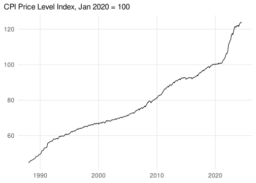
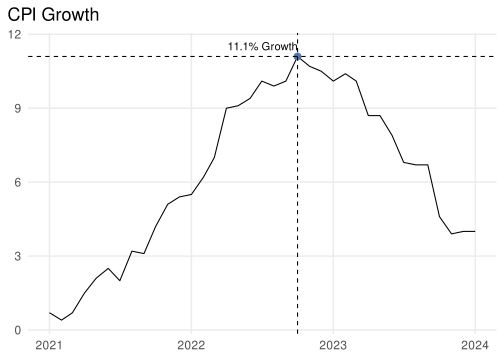
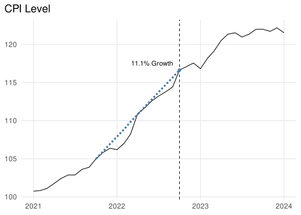
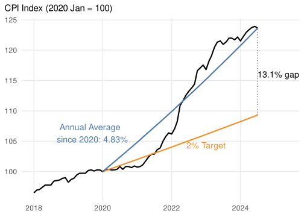
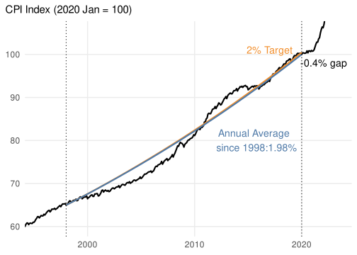

Inflation is Down, but the Price Level is 13% Higher
Inflation is the first derivative of the price level. This causes confusion because a fall in inflation isn’t the same thing as a fall in prices1. The surge in inflation in 2021 has made goods and services more expensive than before COVID. It has also made them more expensive than they would have been if the Bank of England (BoE) target was hit, which is what this post is about.
Here are some plots to help visualise inflation and the price level in the past few years. Start off with how the price level has looked since the 90’s:
Zooming in on the period after January 2020, inflation jumps up in early 2021. CPI inflation peaked in October 2022 at 11.1%, which is the point at which the 12 month change was steepest:


Now, we can draw a 2% trend line from January 2020 (which factors in the lower inflation over 2020), to see where the target would be. Average inflation has been ~4.8%, which is approximately a 3% overshoot to the 2% target, which over 4.5 years gets you to 13%:

Doing the calculation properly, if the BoE 2% target was hit since the pandemic begun, the price level would have been 9.3% higher than January 2020. It is currently 23.7% higher. Taking the ratio \(\frac{123.7\%}{109.3\%}\) equals the 13.1% “excess inflation” compared to meeting the inflation target throughout.
There are good reasons for this permanent increase, both the initial surge, and the fact the Bank isn’t trying to create deflation to get back on the trend. The target is asymmetric, and trying to lower prices by 13% using interest rates would likely result in a large increase in unemployment.
A 13% overshoot also doesn’t imply we are 13% poorer. Nominal wage growth has been higher since 2020, so only part of this decline is real. Average earnings have increased by 20% between 2023 and 2020, which is approximately the same as CPI inflation, although there is huge heterogeneity here – not everyone’s income has kept pace, and inflation doesn’t affect all people equally. As it turns out, the ONS also publishes CPI microdata, so you can see how much the prices of specific goods have gone up.
On a positive note, the bank had been doing very well since it was made independent in 1998. It hit 2% almost perfectly up to January 2020, with a cumulative 0.4% difference to target, though slightly undershooting in the 2000’s and overshooting in 2010’s.
